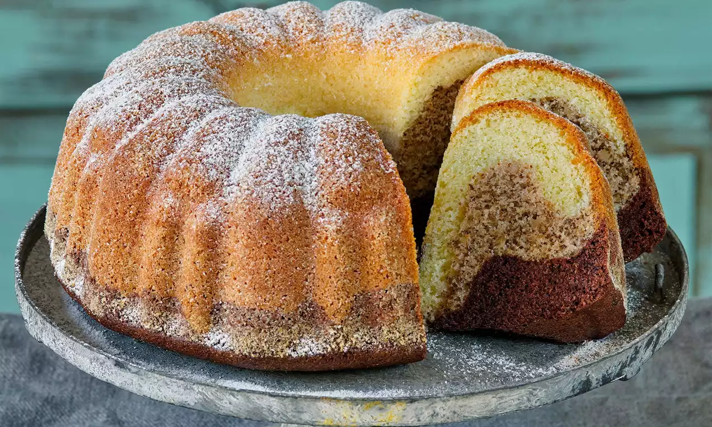

Jednoduchá a rychlá bábovka, kde hrnek má objem 250 ml. Můžete ji obohatit kakaem nebo kokosem.
Formu na bábovku důkladně vymažeme tukem a vysypeme hrubou moukou.
Vejce s cukrem vyšleháme do pěny. Přidáme olej a mléko.
Vmícháme mouku smíchanou s práškem do pečiva, vanilkový cukr a nastrouhanou citronovou kůru.
Vše dobře, ale lehce promícháme a nalijeme do připravené formy. Pokud chceme kakaovou nebo kokosovou variantu, přidáme kakao nebo kokos do těsta.
Pečeme v předehřáté troubě 45–50 minut při 165–170 °C.
Ke konci pečení zkontrolujeme špejlí propečenost. Špejle musí být po vytažení suchá, pokud je na ní těsto, pečeme dále.